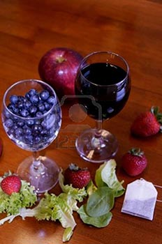

Por sus propiedades afrodisíacas, se bebía su jugo para lograr una excitación sexual
Los estudios botánicos sobre los ingredientes mágicos de las brujas suelen concluir en un nexo común: todas las plantas utilizadas producían borrachera. El caso de los arándanos no es diferente. Esta planta fue muy utilizada por la magia negra hace siglos, con el fin de elaborar un licor cargado de alcohol que sumiera a los participantes del aquelarre en un profundo trance. En realidad, las brujas no lo consumían para emborracharse, sino porque creían que era un ingrediente afrodisíaco que les permitiría comulgar sexualmente con el demonio.
El arándano ha sido considerado un ingrediente afrodisíaco en diferentes culturas, como la hindú, que los incluye dentro del chakra sexual. Los frutos del arándano maduran entre julio y septiembre y con ellos se pueden elaborar riquísimas mermeladas. Contiene flavonoides con importantes propiedades antioxidantes, muy beneficiosas para la salud.
Receta;
Arándanos hacer y excelente vino que es muy fácil de hacer.
Cómo hacer el vino de arándano? Éstos son los ingredientes:
3 a 4 libras de arándanos
6 onzas de concentrado de uva
Una cucharadita de levadura de vino (Usted puede usar levadura de panadería, pero puede dar un "Bready" sabor al vino terminado.)
2 1 / 2 libras de azúcar.
Inicio de la levadura antes de tiempo para que pueda estar en plena efervescencia cuando se añade al vino mosto. Añadir una cucharadita de gránulos de levadura en un vaso caliente 8 oz de agua tibia en la que ha sido una cucharada de azúcar se disuelva. A continuación, disolver el resto del azúcar, añadiendo que a 1 / 2 litro de agua hirviendo. Revuelva hasta que se aclare. Cuando la solución de azúcar se ha enfriado y la levadura de fermentación del vino es, puede seguir la receta. Volcado de los arándanos en un tazón que se celebrará por lo menos un año y medio galón. No usar metal. El uso de plástico, cerámica esmaltada o vidrio. Un balde de agua limpia, que no se ha utilizado con cualquier tipo de solución de limpieza va a funcionar. Tengo un dos y un cubo medio galón que he utilizado exclusivamente para la elaboración del vino. Se utiliza para nada más. Utilice una trituradora de la patata para aplastar a fondo los arándanos. A continuación añadimos el concentrado de uva. Esto impartir lo que se llama "calidad de origen vínico" para el vino. Ahora agregue la solución de azúcar enfriado. Llenar con 3,5 litros de agua tibia. A continuación, agregue la levadura de fermentación. Cubra el recipiente con una tapa suelta como un paño de cocina o alimentos elástica recubre.
Permitir que este en reposo durante tres o cuatro días, revolviendo de tres o cuatro veces al día. Se debe comenzar la fermentación con fuerza después de un día o dos. A continuación verter el granizado de arándanos a través de un colador de plástico y pulse el residuo con una trituradora de la patata, la extracción de la mayor parte del jugo. Vierta esta mezcla en un frasco de un galón para fermentar. Completar con agua fría y colóquelo en un lugar oscuro que se mantiene en torno a sesenta y cinco hasta setenta grados centígrados. Utilice un recipiente de cristal o jarra limpiarse la leche de plástico. No ponga la tapa a rosca. La botella va a explotar debido a la acumulación de la presión de dióxido de carbono como los fermentos levadura. Coloque un pedazo de plástico de comida de plástico sobre la abertura y seguro con una banda elástica.
Esta receta del vino de arándanos dará un vino semi-dulce. Para obtener un vino más dulce, añadir un azúcar más. Para un vino de secadora, agregar un poco menos. También puede endulzar el vino si es muy seco, añadiendo un poco de azúcar para que cuando se realiza la fermentación.
Después de que el vino ha fermentado de dos a tres meses, debe ser desviada, con plástico transparente, la tubería calidad de los alimentos, en un galón limpio. Tenga cuidado de no perturbar el sedimento en el fondo. Debe ser hecho por la fermentación de ahora y la parte superior del tornillo se puede utilizar para proteger el vino. No gire con fuerza, deja que se suelte durante una semana más o menos en el caso de que el viento comienza a fermentar de nuevo. Después de que el vino de arándanos ha envejecido durante unos meses estará listo para beber y disfrutar. Esta receta simple que muestra cómo hacer vino de arándanos en pocos pasos.
